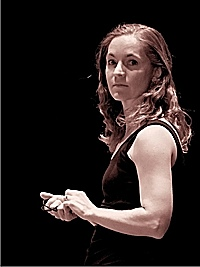
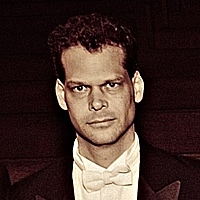
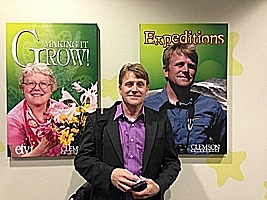

Amy Hackney Blackwell
Amy Hackney Blackwell holds a B.A. in History from Duke University, an M.A. in History from Vanderbilt University, a J.D. from the University of Virginia School of Law, and a Ph.D. in Plant and Environmental Science from Clemson University. She has been a freelance writer since 1999, writing books, textbooks, and articles on topics in history, culture, science, sports, and law.
Amy is currently a Research Associate in the Department of Biology at Furman University, and a Research Associate with the South Carolina Botanical Garden at Clemson University.
Christopher Blackwell
Christopher W. Blackwell has a B.A. in Classics from Marlboro College and a Ph.D. in Classics from Duke University. He is currently the Louis G. Forgione University Professor in the Department of Classics at Furman University. He has published books on ancient Greek history, articles on computational humanisties, collaborative research, and digital library infrastructure.
Patrick McMillan
Patrick McMillan hold a B.S. in Biology and Chemistry from the University of North Carolina at Chapel Hill, and a Ph.D. in Biological Sciences from Clemson University. He is Director of the South Carolina Botanical Garden, Director of the Bob and Betsy Campbell Geology Museum, and Director of the Clemson University Museum of Natural Sciences. He teaches Plant Taxonomy (BIOSC 406/606) and Natural History on the Biological Sciences faculty at Clemson University. He is the the producer, host, writer, director and co-editor of the Emmy award- winning television program “Expeditions with Patrick McMillan” aired on PBS affiliates across the nation. He also hosts a popular natural history/birding program on SCETV (NPR affiliate) Radio’s Your Day program. He has published scholarly and popular articles on botany, ichthyology, herpetology, ornithology, mammology, and ecology.